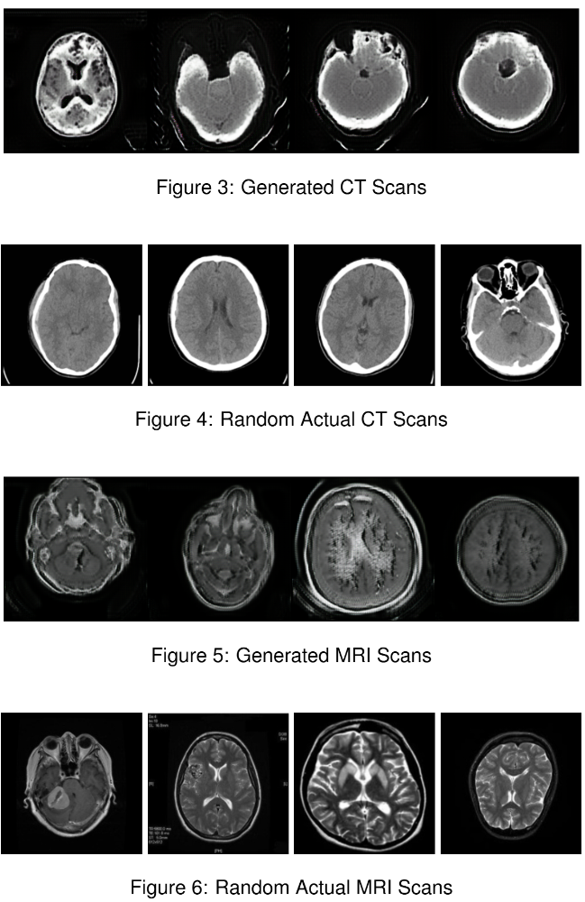

Project Type: Deep Learning · Image Translation
This project applies a CycleGAN-based architecture to translate CT scans into MRI images and vice versa. The model learns domain-specific features from each modality and performs unpaired image-to-image translation using cycle consistency. This enables synthetic generation of one modality from the other without requiring aligned datasets.
Medical imaging modalities like CT and MRI provide complementary views of anatomy, but acquiring both can be expensive, time-consuming, or contraindicated. A tool that can generate one from the other helps in clinical decision support, data augmentation, or low-resource settings where one modality is unavailable.
The system uses two generator-discriminator pairs trained adversarially. Cycle consistency ensures that an image translated from CT to MRI and back remains faithful to the original. This method allows the model to retain anatomical structure while adapting texture, brightness, and contrast between domains.
Python, PyTorch, CycleGAN, NumPy, OpenCV, Matplotlib
 ← Back to Portfolio